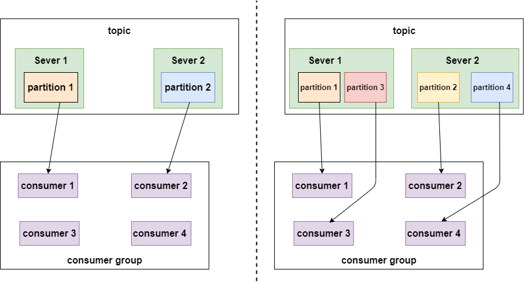
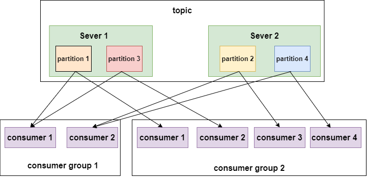
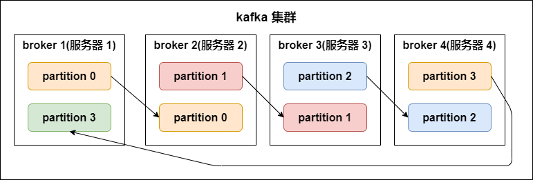
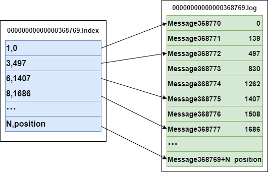
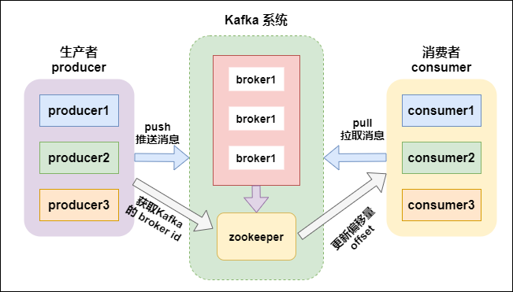
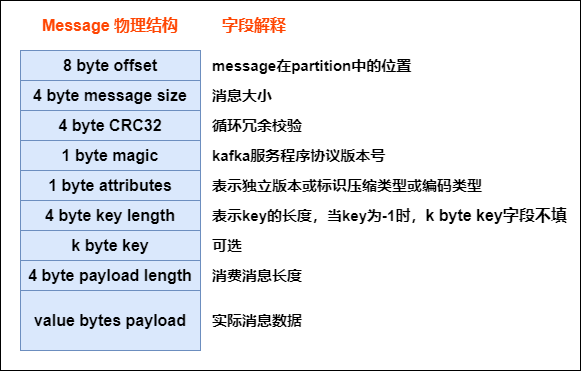
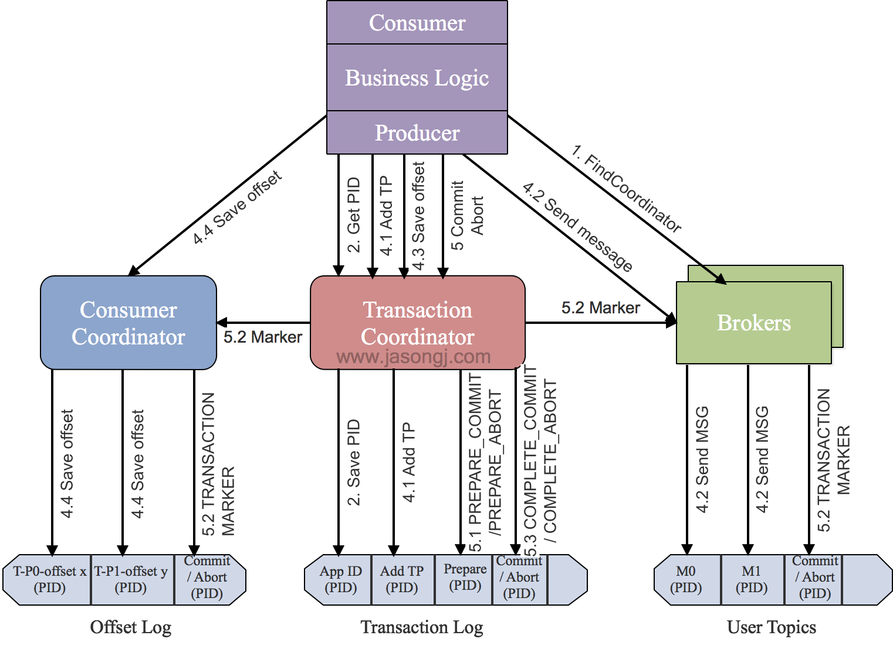

Faq Kafka
Last updated: Jul 3, 2024Table of Contents
- 1) Explain kafka architecture ?
- 1’) Kafka message structure ?
- 1’') How kafka find .log file via index ?
- 1’‘’) Explain how does zookeeper (ZK) work in kafka ? how kafka interact with offset via ZK ?
- 2) How does kafka implement exactly once ?
- 3) How kafka avoid data missing ?
- 3’) Explain kafka ACK ?
- 4) Explain kafka basic data model ?
- 5) Explain how does kafka save data (low level, file system level) ?
- 6) Explain kafka master, slaves relation ? regarding data partition, … ?
- 7) Steps when a consumer consumes a kafka topic ?
- 8) Explain kafka’s Idempotence (冪等性)
- 9) Explain kafka’s transactional (事務性)
- 9’) Explain Transaction Coordinator and it mechanism ?
- 10) Explain AR（Assigned Replicas), ISR (In-sync replica), and OSR（Out-of-Sync Replicas）?
- 11) Describe kafka limitation ?
- 12) Explain why kafka can do high I/O ?
- 13) Explain kafka topic partition strategy ?
- 14) What’s if multiple consumers in same consumer group ?
- 14) streaming model ?
- Ref
Kafka FAQ
1) Explain kafka architecture ?
-
Feature
- kafka is a sustainable
distributedpub-sub (publish-subscribe) message system - developed by Linkedin via scala
- can work with both online and offline msg. Data saved on disk with replica -> prevent data lost
- kafka is a sustainable
-
Component
Broker- kafka cluster has many nodes
- A broker is a node/server
Topic- every event on kafka belongs to a class, which is “topic”
- each topic for different data source (feeds of messages)
- can have unlimit topics
- producer-subscriber use “topic” as basic unit. Can split further via topic partition
Partition- each topic has multiple partitions
- NOTE : same broker can have multiple partition -> broker count has NO relation to partition count
- each topic has a partition id. Start from 0
- NOTE !!! :
- data in each partition can be ordering. But CAN’T guarantee global data (all data in topic) is ordering
- ordering : keep the same ordering in producer’s data and data read by consumer
- partition defines the MAX “con-current” consumer in the same consumer group
- So, we can raise consuming speed, if we have more partition


- Partition replicas
- replication-factor
- define how many replicas (on different brokers).
# of replicas == # of brokerin general- Each
partitionhas its ownleader replicaandfollower replica- e.g. 1 leader, N followers -> N replicas
- the follower replica which is in sync called “in-sync-replicas(ISR)”
- NOTE !!! :
producer and consumerBOTHread and writedata fromleader replica, NOT interact with follower replica - For data reliability when data I/O
- if leader down, then will raise the other follower as new leader

- replication-factor
Segment- each partition has
multiplesegments.- Each segment has 2 parts:
.index: index file (for .log). for finding offset in .log file.log: record actual event data
- Name convention
- consider “global partition”. Start from 0
- Next segment name if last partition’s MAX offset (offset msg count)
- offset is 64 bit Long, 20 digit nunber, filled with 0 if no digit
- Each segment has 2 parts:
- example:
3,497inindex: means 3rd msg in .log file, and its offset = 497Message 368772inlog: means it’s 368772 rd msg in global partition- .log and .index
# file structure /<topic_name>-<partition_name> /.../xxx.index /.../xxx.log # index file 00000000000000000000.index // <offset>.index # log content 00000000000000000000.log // <offset>.log# example -rw-r--r--. 1 root root 389k 1月 17 18:03 00000000000000000000.index -rw-r--r--. 1 root root 1.0G 1月 17 18:03 00000000000000000000.log -rw-r--r--. 1 root root 10M 1月 17 18:03 00000000000000077894.index -rw-r--r--. 1 root root 127M 1月 17 18:03 00000000000000077894.log

- each partition has
Producer- msg producer, send msg to kafka broker
- write data to
leader replica
Consumer- msg consumer (client), read msg from kafka
- consumer MUST belong to a consumer group
- read data from
leader replica - NOTE !!! :
# of consumershould<=# of partition in topic- since same data should ONLY be consumed by one consumer under same consumer group at once
Consumer group- each consumer belogs to a specific
consumer group(we can define consumer’s group name) - SAME consumer in SAME consunmer group ONLY consume same msg ONCE
- each consumer has a ID (group ID). All consumers can subscribe all partition under a topic
- each partition CAN ONLY be consumed by A consumer under a consumer group
- each consumer belogs to a specific
-
Pic

-
Ref
1’) Kafka message structure ?
- As below, every msg sent from producer will be pre-processed via kafka, then saved as below structure (in kafka broker). Only last field is the actual data from broker
- Pic

1’') How kafka find .log file via index ?
1’‘’) Explain how does zookeeper (ZK) work in kafka ? how kafka interact with offset via ZK ?
2) How does kafka implement exactly once ?
- please check below
Idempotence (冪等性),transactional (事務性) - TL;DR
- PID (producer ID), sequence number
- transaction
3) How kafka avoid data missing ?
- Producer
- Via
ACK - Can use
sync,asyncmode send data to kafka - Mode
- Sync
- send a batch data to kafka, wait for kafka’s response
- producer wait 10 sec (?), if no ACK response, mark as failure
- producer retry 3 times (?), if no ACK response, mark as failure
- send a batch data to kafka, wait for kafka’s response
- Async
- send a batch data to kafka, ONLY offer a
callback()method - save data in producer’s buffer first, buffer size is about 20k
- if meat threshold, then can send data (to kafka)
- size of batch data is about 500
- NOTE : if there is no ACK from kafka broker, but producer buffer is full, developer can decide mechanisms whether clean buffer or not (programmatically)
- send a batch data to kafka, ONLY offer a
- Sync
- Via
- Broker
- Via
Partition replicasavoid data missing
- Via
- Consumer
- Each consumer record/maintain its own offset. can avoid data missing
- We can save offset on client’s file system, DB, Redis…
3’) Explain kafka ACK ?
request.required.acks: how to acknowledge when kafka writes producers’ messgage to its (kafka) copy- A tradeoff between efficiency (response speed) and reliability (fault tolerance)
- cases
ack = 1 (default)- when producer -> kafka broker. if kafka leader comfirms msg received successfully -> Success, will lost data if leader down before followers sync
ack = 0- whenever producer -> kafka broker, mark it as success. Highest speed, will lost data if broker down
ack = -1 (or all)- when producer -> kafka broker, have to wait
leader and ALL followers' confirmation. Slowest speed, but make sure NO data lost.
- when producer -> kafka broker, have to wait
- Ref
4) Explain kafka basic data model ?
5) Explain how does kafka save data (low level, file system level) ?
- File
- .log : file save data
- .idnex : file save .log files’ index
6) Explain kafka master, slaves relation ? regarding data partition, … ?
7) Steps when a consumer consumes a kafka topic ?
8) Explain kafka’s Idempotence (冪等性)
- Idempotence -> when run same process multiple times, the result SHOULD BE THE SAME
- core concept : PID（Producer ID), sequence number
- kafka gives each producer a PID, also maintain a
<PID, Partition> -> sequence numbermapping for each Partition in each producer - Can ONLY make sure Idempotence inside producer, can’t guarantee if producer down and restart
- Can ONLY make sure Idempotence inside single partition, can’t across topic-partition
- Implementation
- Broker
- when get event
- If
sequence number = "<PID, Partition>"'s sequence number + 1: broker accept this event - If
sequence number < "<PID, Partition>"'s sequence number: duplicated event, broker will neglect it - If
sequence number > "<PID, Partition>"'s sequence number: there is data missing, broker will raiseOutOfOrderSequenceExceptionexception
- If
- when get event
- Producer
PID（Producer ID):- use
Properties.put(“enable.idempotence”,true);enable Idempotence - recognize each producer client
- every producer gets a global unique PID when init
- if producer resrart, it will get a new PID
- for each PID, sequence number starts from 0
- each topic-partition has a independent sequence number
- apply PID via ZK:
- step 1) get
/latest_producer_id_blockfrom zk for lastest allocated PID - step 2) if such node is new, start PID from 0 (0-1000), get 1000 PID at once (default)
- step 3) if such node existed, get its data, get PID based on block_end
- step 4) get PID, and write such inform back to ZK, if writes success -> whole process OK, if fail, means maybe node already updated/other, will redo from step 1)
- step 1) get
- use
Sequence number:- every msg (from producer client) has this value, for checking if a record is duplicated
- Broker
- Ref
9) Explain kafka’s transactional (事務性)
- offer “partition writing”
ATOM-> ONLY when ALL ops success, then commit and say these ops are success, else -> rollback (e.g. ALL success or ALL failure) - core concept :
- TransactionalId
_transaction_state（Topic)- Producer epoch
- ControlBatch (aka Control Mesage, Transaction Marker)
- special event sent from producer to kafka topic.
- 2 types: COMMIT, ABORT (commuit success or not)
- TransactionCoordinator
- why not use producer id (PID), but introduce TransactionalId ?
- producer id (PID) get refreshed when producer restart, so
we use TransactionalId make each event unique
- producer id (PID) get refreshed when producer restart, so
- make sure “exactly once”
- Implementation
- step 1) find
Tranaction Corordinator (TC)- producer sends
FindCoordinatorRequestto a broker, then finds a TC, and gets its node_id, host, port
- producer sends
- step 2) init initTransaction
- producer sends
InitpidRequestto TC, gets PID (producer ID), TC will record<TransactionalId,pid>to Transaction Log, state infromation (e.g.Empty/Ongoing/PrepareCommit/PrepareAbort/CompleteCommit/CompleteAbort/Dead) is also included - Commit/Abort non-completed tasks
- add PIC with epoch, make transaction in producer
- producer sends
- step 3) begin Transaction
- run producer’s
beginTransacion(). Will mark a transaction as “start” state in local record.
- run producer’s
- step 4) read-process-write
- Once producer start sending event, TC will save
<Transaction, Topic, Partition>to Transaction Log, and set it “start” state, also record the time. - Broker will save sent event in its disk (without commit/abort). If there is an “abort”, msg on broker will NOT be canceled, but changed state to “abort”
- Once producer start sending event, TC will save
- step 5) commitTransaction/abortTransaction
- while producer run commit/abort, TC will do 2 phase commit
- phase 1 : modify Transaction log to
PREPARE_COMMITorPREPARE_ABORT - phase 2 : modify all events written by Transaction Marker to committed or aborted
- phase 1 : modify Transaction log to
- once Transaction Marker complete writing, TC will write final status to Transaction log and mark such transaction is completed
- while producer run commit/abort, TC will do 2 phase commit
- step 1) find
- pic

- Ref
9’) Explain Transaction Coordinator and it mechanism ?
10) Explain AR（Assigned Replicas), ISR (In-sync replica), and OSR（Out-of-Sync Replicas）?
- AR（Assigned Replicas)
- ISR (In-sync replica)
- OSR（Out-of-Sync Replicas）
- Ref
11) Describe kafka limitation ?
- auto scale : it’s hard to scale down if scale out first (modify partition data in topics)
- can have 2 kafka clusters, if one wants to scale up/down still. (Use the other service request first, avoid downtime)
- keep published event in
ordering in global
12) Explain why kafka can do high I/O ?
- ordering read/write
- zero copy
- split file
- batch transmit
- data compression
- Ref
13) Explain kafka topic partition strategy ?
- Range strategy
- RoundRobin strategy
- Ref
14) What’s if multiple consumers in same consumer group ?
-
Can multiple Kafka consumers read same message from the partition ?
-
Kafka consumers are typically part of a consumer group. When multiple consumers are subscribed to a topic and belong to the
same consumer group,each consumerin the group will receive messages from a differentsubsetof the partitions in the topic. -
如果ㄧ個consumer group 裡有複數個consumer -> 每個consumer只會收到topic
部分的訊息 -
如果consumer 分屬不同 consumer group (訂閱同個topic) -> 每個consumer都會收到topic
全部訊息 -
In same group : No
- Two consumers (Consumer 1, 2) within the same group (Group 1)
CAN NOTconsume the same message from partition (Partition 0)
- Two consumers (Consumer 1, 2) within the same group (Group 1)
-
In different group : Yes
- Two consumers in two groups (Consumer 1 from Group 1, Consumer 1 from Group 2) CAN consume the same message from partition (Partition 0).
14) streaming model ?
-
Msg queue (e.g. rebbitMQ)
- each serve can only read part of msg fro queue
-
pub - sub (e.g. publish, subscriber)
Note : In kafka, the concept of “consumer group” offers the generic of mix above
- multiple consumers in same group ~= reading from queue